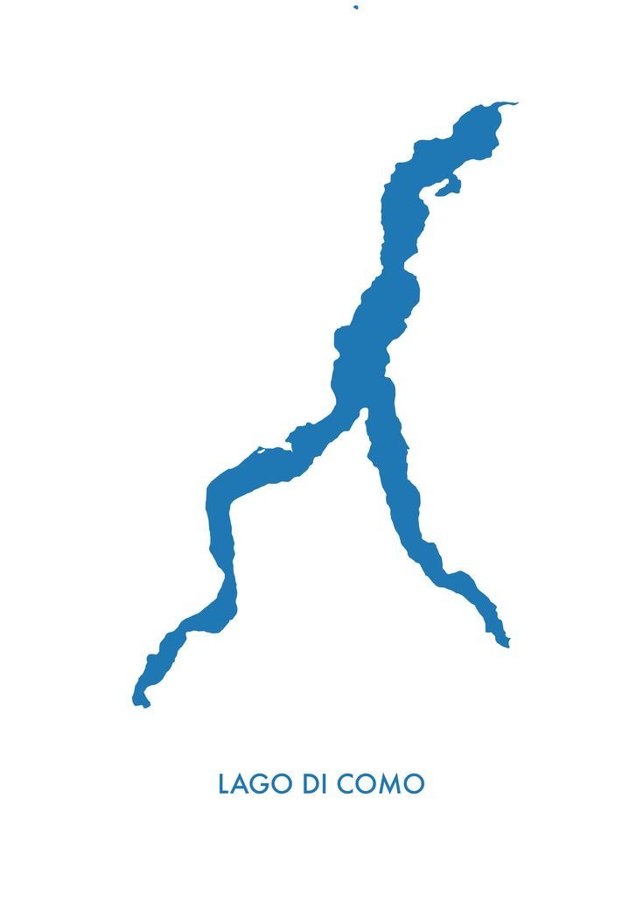
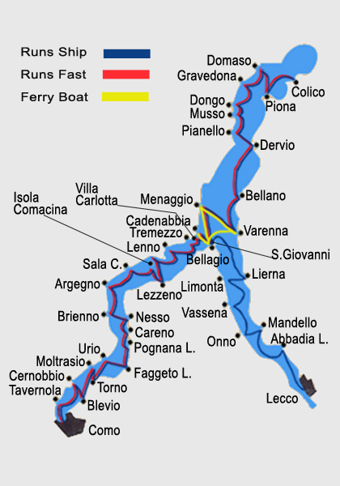

Lago di Como, Italy
Hurry!
Lago di Como

Lake Como, known locally as Lago di Como or Lario, stands as Italy's third-largest lake, following Lake Garda and Lake Maggiore. Nestled at the base of the Alps, it presents some of Italy's most romantic and picturesque landscapes.
Its iconic inverted-Y shape originates from the combined effects of glacial melting and the erosive forces of the Adda river. This natural process sculpted the lake into two southern branches that converge at the cities of Como and Lecco, featuring the renowned town of Bellagio at their meeting point.

Lago di Como

Map of Lago

Sunrise at Lago
Between towns, short distances make it easy to explore 3 or 4 villages using local transportation. You can wander among stunning villas and gardens, unwind on beautiful beaches or private boat tours, and recharge with refreshing nature walks.
I highly recommend taking a ferry to visit three of the area's top towns: Varenna, Bellagio, and Menaggio. For a deeper insight into these towns, I encourage you to explore further details available on this website. It offers a comprehensive view of the charm and attractions awaiting you in Varenna, Bellagio, and Menaggio, complemented by my personal photos captured in these picturesque locations.

Upload File here
I would be delighted if you could share your photos from your trip to Lago Di Como here: